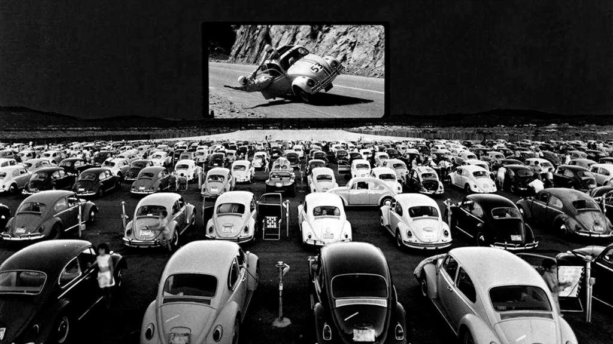

La historia de los autos en el cine comenzó prácticamente con el propio nacimiento del séptimo arte. Desde las primeras películas mudas, los automóviles se utilizaron como símbolo de modernidad, velocidad y libertad. En los años 30 y 40, aparecían principalmente como elementos de fondo o parte del entorno urbano, pero con el tiempo comenzaron a tener un rol más protagónico. Un ejemplo temprano fue el uso de autos en persecuciones policiales en películas de gánsteres. Sin embargo, fue en los años 60 y 70 cuando los autos comenzaron a cobrar verdadero protagonismo, con escenas de persecución innovadoras y espectaculares como la del Ford Mustang GT en "Bullitt" (1968), considerada una de las mejores de todos los tiempos. Con la llegada de franquicias como James Bond, donde el Aston Martin DB5 se volvió un ícono, y más tarde películas como "The Fast and the Furious" o "Mad Max", los autos pasaron a ser verdaderos protagonistas de la acción. Estas películas no solo mostraron vehículos impresionantes, sino que también definieron estilos de conducción, modificaciones y culturas urbanas alrededor del automóvil. A lo largo de los años, el cine no solo ha reflejado la evolución de la industria automotriz, sino que ha ayudado a construir el mito de muchos modelos clásicos, convirtiéndolos en leyendas gracias a su presencia en la gran pantalla.
